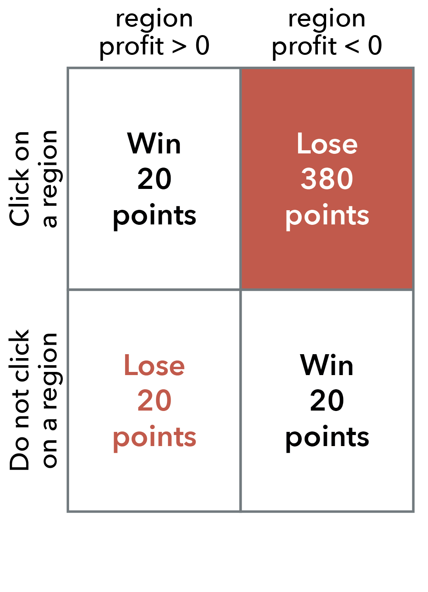

Visualization Insights study
Tutorial
You will get to know your task on this tutorial page. Please read carefully and try out the task on this page before proceeding to the actual study.
Background story of your task
 You are a manager supervising the sales of a group of stores across 10 regions. Each region has 200 stores. Your job is to make judgment calls now and pick out the promising regions where the average store is making a profit (profit > 0). So far, however, you've only received sales data for 20 random stores (out of 200) in each region. To help you evaluate the regional profits with incomplete data, your business analyst used statistics and created plots, like the ones shown on the right.
You are a manager supervising the sales of a group of stores across 10 regions. Each region has 200 stores. Your job is to make judgment calls now and pick out the promising regions where the average store is making a profit (profit > 0). So far, however, you've only received sales data for 20 random stores (out of 200) in each region. To help you evaluate the regional profits with incomplete data, your business analyst used statistics and created plots, like the ones shown on the right.
Keep in mind that each graph only show sales data from the 20 random stores, out of the 200 stores in each region. So even if the average store is making profit in the graph, the other stores in the region might be loosing a lot of money. It is up to you to assess if the all the stores in the region are making profits on average.
Once you have tried picking out the profitable regions below, you can compare your judgment to the actual data on the next screen.
How your job performance is evaluated
 Your job of picking out profitable regions without full sets of data is risky. You will win or lose corporate brownie points based on the rules below, and of course your goal is to maximize your points for the next promotion (and bonus pay).
- ✅ If you think a region is profitable on average and select it now based on the 20 stores, and that region does have an average profit greater than zero based on all 200 stores, you will receive 20 points.
- ✅ If you do not select a region, and that region does not have a profit greater than zero on average, you will receive 20 points.
- ❌ If you select a region, and that region does not have a profit greater than zero, on average, you will lose 380 points.
- ❌ If you do not select a region, and that region does have a profit greater than zero, on average, you will lose 20 points.
Try out your task
Click on the regions you think are making a profit. Keep in mind that each graph only show sales data from the 20 random stores, out of the 200 stores in each region. You can click on multiple stores.
Region 1
Region 2
Region 3
Region 4
Region 5
Region 6
Region 7
Region 8
Region 9
Region 10
Region 11
Region 12